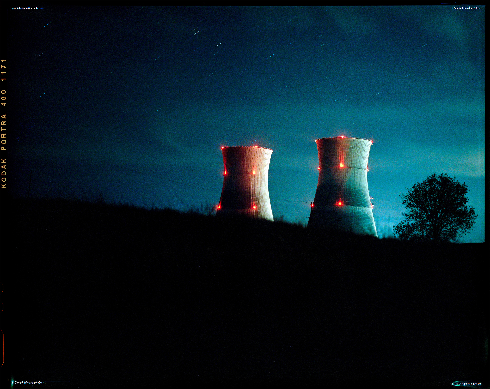

Long Exposures on Film
Astro on film is half physics problem, half ritual. This post documents my Ektachrome E100 workflow, reciprocity notes, and real exposure examples.

Why Ektachrome for astro
Fine grain, stable color, and the slide itself is the object. The tradeoff is tight latitude—exposure matters.
- Reversal film: less forgiveness than negative
- Highlights clip fast—protect bright stars/skyglow
- Scanning is translation, not the “original”
Reciprocity: what Kodak says vs what I see
Kodak notes no reciprocity correction below ~10s. Past that, I’m watching for density loss and color shifts.

Reciprocity test table
| Metered | Corrected | Result | Notes |
|---|---|---|---|
| 10s | 10s | OK | Reference exposure |
| 30s | — | OK | Color stable |
Draft table—replace with your test series once you run it.
Exposure examples